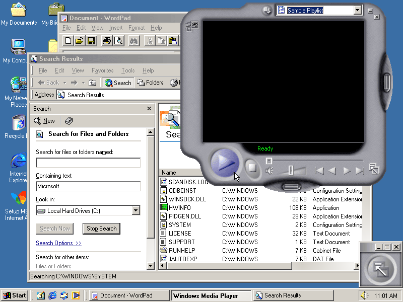

This webpage does not have a section on editions as there was only one edition, the base edition.
Windows Me (Millennium Edition) is an operating system developed by Microsoft as the last operating system in the Windows 9x series of Microsoft Windows operating systems. It was the successor to Windows 98, and was released to manufacturing on June 19, 2000, and to retail on September 14, 2000. It was Microsoft's main operating system for home users and quickly replaced by its successor Windows XP on October 25, 2001.
Date released: September 14, 2000
End of Support: Mainstream - December 31, 2003
Extended - July
11, 2006
Last release: 4.90.3000 on September 14, 2000
Succeeded by: Windows XP (released 2001)
Codename: None
Developed by: Microsoft Corporation
Windows Me was targeted specifically at home PC users, and included Internet Explorer 5.5, which could later be upgraded to Internet Explorer 6; Windows Media Player 7, which could later be upgraded to Windows Media Player 9 Series; DirectX 7, which could later be upgraded to DirectX 9; and the new Windows Movie Maker software, which provided basic video editing and was designed to be easy to use for consumers. Microsoft also incorporated features first introduced in Windows 2000, which had been released as a business-oriented operating system seven months earlier, into the graphical user interface, shell and Windows Explorer. Although Windows Me was still based on MS-DOS like its predecessors, access to real-mode DOS was restricted to decrease system boot time.
Windows Me was initially positively received when it was released, but it quickly recieved a more infamous reputation from many users due to lots of stability problems. In October 2001, Windows XP was released to the public, having already been under development at the time of Windows Me's release, and incorporated most, but not all, of the features of Windows Me, while still being far more stable due to being based on the Windows NT kernel. Mainstream support for Windows Me ended on December 31, 2003, followed by extended support on July 11, 2006.
Development
At the 1998 Windows Hardware Engineering Conference, Microsoft CEO Bill Gates stated that Windows 98 would be the last iteration of Windows to use the Windows 9x kernel, with the intention for the next consumer-focused version to be based on the Windows NT kernel, unifying the two branches of Windows. However, it soon became apparent that the development work involved was too great to meet the aim of releasing before the end of 2000, particularly given the ongoing parallel work on the eventually-canceled Neptune project. The Consumer Windows development team was therefore re-tasked with improving Windows 98 while porting some of the look-and-feel from Windows 2000. Microsoft President Steve Ballmer publicly announced these changes at the next Windows HEIC in 1999.
On July 23, 1999, the first alpha version of Windows Me was released to testers. Known as Development Preview 1, it was very similar to Windows 98 SE, with the only major change being a very early iteration of the new Help and Support feature that would appear in the final version. Three more Development Previews were released over the subsequent two months.
The first beta version was released to testers and the industry press on September 24, 1999, with the second coming on November 24 that year. Beta 2 showed the first real changes from Windows 98, including importing much of the look-and-feel from Windows 2000, and the removal of real-mode DOS. Industry expert Paul Thurrott reviewed Beta 2 upon release and spoke positively of it in a review. By early 2000, Windows Me was reportedly behind schedule, and an interim build containing the new automatic update feature was released to allay concerns about a delayed-release.
In February 2000, Paul Thurrott revealed that Microsoft had planned to exclude Windows Me, as well as new releases of Windows NT 4.0, from CD shipments for MSDN subscribers. The reason given in the case of Me was that the OS was designed for consumers. However, Thurrott alleged that the real motivation behind both case to force software developers to move to Windows 2000. Three days later, following a write-in and call-in campaign by hundreds of readers, Microsoft announced that Windows Me (including development versions) would ship to MSDN subscribers after all. Microsoft also apologized personally to Thurrott, claiming he received misinformation, though in a follow-up article he stated that it was "clear that the decision [...] actually changed".
Beta 3 was released on April 11, 2000, and this version marked the first appearance of its final startup and shutdown sounds derived from Windows 2000, as the previous betas used Windows 98's startup and shutdown sounds.
ReleaseAlthough Microsoft signed off on the final build of Windows Me on June 28, 2000, after trialing three Release Candidate builds with testers, the final retail release was pushed back to September 14 for reasons that were not clear.
Shortly after Windows Me was released to manufacturing on June 19, 2000, Microsoft launched a marketing campaign to promote it in the U.S., which they dubbed the Meet Me Tour. A national partnered promotional program featured the new OS, OEMs and other partners in an interactive multimedia attraction in 25 cities.
Windows Me was released for retail sale on September 14, 2000.At launch time, Microsoft announced a time-limited promotion from September 2000 to January 2001 which entitled Windows 98 and Windows 98 SE users to upgrade to Windows Me for $59.95 instead of the regular retail upgrade price of $109. Non-upgrade versions cost $209, the same as Windows 98 on its release. In October 2001, Microsoft released Windows XP, which also included the ZIP folders, the Spider Solitaire game and Internet Explorer 6 by default, all while being based on the Windows NT kernel, which on XP was an evolution of the one in Windows 2000.
Features
Hardware support improvements
Faster boot times: Windows Me features numerous improvements for improving cold boot time, pre and post-logon boot times and time required for resuming from hibernation. Processing of real mode configuration files, CONFIG.SYS and AUTOEXEC.BAT, is bypassed at startup and essential real mode drivers like HIMEM.SYS and SMARTDRV.EXE are embedded into IO.SYS. The registry is loaded only once; for efficient loading, the registry is split into three files instead of two (SYSTEM.DAT and USER.DAT), with the new file CLASSES.DAT containing the contents of the hive HKEY_CLASSES_ROOT required for boot loaded initially. Plug and Play device enumeration is more parallelized than in Windows 98. Boot time is not affected due to unavailability of a DHCP server or other network components. There are also optimizations to prevent boot slowdown due to BIOS POST operations.
USB Human Interface Device Class: Generic support for 5-button mice is also included as standard and installing IntelliPoint allows reassigning the programmable buttons.
Windows Image Acquisition: Windows Me introduced the Windows Image Acquisition API for a standardized method of allowing Windows applications to transparently and more easily communicate with image acquisition devices, such as digital cameras and scanners. WIA intended to improve the configuration and the user interface for interacting with scanners and such devices, (which were previously supported by the TWAIN standard) and simplify writing device drivers for developers. WIA also includes support for USB still image capture device classes such as scanners and cameras through the Picture Transfer Protocol.
Improved power management and suspend/resume operations: The OEM version of Windows Me supports OS-controlled ACPI S4 sleep state (hibernation) and other power management features without manufacturer-supplied drivers.
USB and FireWire support improvements: Windows Me is the only operating system in the Windows 9x series that includes generic drivers for USB mass storage devices and USB printers. Support for FireWire SBP-2 scanners and storage devices is also improved.
The waveOut, DirectSound, and DirectShow APIs support non-PCM formats such as AC-3 or WMA over S/PDIF.
Media
- Windows Movie Maker: This utility is based on DirectShow and Windows Media technologies to provide Microsoft Windows computer systems with basic video capture and edit capabilities. It provides users with the ability to capture, edit, and re-encode media content into the Windows Media format, a tightly compressed format that requires a minimal amount of storage space on the computer's hard disk when compared to many other media formats.
- Windows Media Player 7: The new version of the Windows multimedia player software introduces jukebox functionality featuring the Media Library, support for CD burning, an integrated media encoder, and the ability to transfer music directly to portable devices. Another new feature is its radio tuner that can be used to search for and connect to radio stations over the internet. Users can also customize the look and feel of the user interface through interactive skins. Windows Me can be upgraded to Windows Media Player 9 Series, which was later included in Windows XP SP2.
- Windows DVD Player: The software DVD player in Windows Me is a redesigned version of the one featured in Windows 98 which, unlike its predecessor, does not require a dedicated decoder card for DVD playback. Instead, it supports software decoding through a third-party decoder.
Networking technologies
- Net Crawler: Windows Me introduced a net crawling feature which automatically searches out and creates shortcuts to network shares and printers in My Network Places. This can be controlled using the Automatically search for network folders and printers option. Shortcuts that are added by the net crawler but not detected again on the network in a reasonable time period are aged out and deleted.
- New TCP/IP Stack: Windows Me includes the Windows 2000 networking stack and architecture.
- The Home Networking Wizard is designed to help users to set up a computer that is running Windows Me for use on a small home network. This includes setting up Internet Connection Sharing (ICS) on a computer running Windows Me so the computer can share a connection to the Internet with other computers on the home network.
- Dial-up Networking component was updated in Windows Me and provides several enhancements while maintaining the desired features of prior releases of the operating system. The user interface had been reworked to provide all configurable parameters in one convenient location. The user interface now included three new tabs: Networking, Security and Dialing. To improve dial-up networking, Windows Me includes built-in support for the Connection Manager dial-up client. Using the Connection Manager Administration Kit (an optional networking component in Windows 2000 Server), network administrators can pre-configure and deploy dial-up networking connections, by means of a Connection Manager service profile, to Windows Me–based client machines.
- Network Driver Interface Specification (NDIS) version 5.0 for Windows Me was enhanced to provide programming interface parity with NDIS version 5.0 in Windows 2000 (the programming interfaces used by network device drivers are the same for both platforms).
- Universal Plug and Play: Windows Me introduced support for Universal Plug and Play (UPnP). Universal Plug and Play and NAT traversal APIs can also be installed on Windows 98 and Windows 98 SE by installing the Windows XP Network Setup Wizard.
System utilities
- System Restore: Windows Me introduced the "System Restore" logging and reversion system, which was meant to simplify troubleshooting and solve problems. It was intended to work as a rollback and recovery feature so that if the installation of an application or a driver adversely affected the system, the user could undo the installation and return the system to a previously working state. It does this by monitoring changes to Windows system files and the registry. System Restore protects only the operating system files, not documents, and therefore is not a substitute for a backup program.
- System File Protection: First introduced with Windows 2000 (as Windows File Protection), and expanding on the capabilities introduced with System File Checker in Windows 98, System File Protection aimed to protect system files from modification and corruption silently and automatically. When the file protection is in effect, replacing or deleting a system file causes Windows Me to silently restore the original copy. The original is taken from a hard drive backup folder (%WinDir%\Options\Install) or from the Windows Me installation CD, if the cached copy of files on the hard disk has been deleted. If no installation CD is in the drive, a dialog box alerts the user about the problem and requests that the CD be inserted. System File Protection is a different technology from System Restore and should not be confused with the latter. System Restore maintains a broad set of changed files including added applications and user configuration data stored repeatedly at specific points in time restored by the user, whereas System File Protection protects operating system files with no user input.
- System Configuration Utility allows users to manually extract and restore individual system files from the Windows Me setup files. It has also been updated with three new tabs called "Static VxDs", "Environment" and "International". The Static VxDs tab allows users to enable or disable static virtual device drivers to be loaded at startup, the Environment tab allows users to enable or disable environment variables, and the International tab allows users to set international language keyboard layout settings that were formerly set via the real mode MS-DOS configuration files. A Cleanup button on the Startup tab allows cleaning up invalid or deleted startup entries.
- System Monitor has been updated with a Dial-Up Adapter section. Users can now monitor items such as Connection Speeds, Bytes Received or Transmitted / Second.
- SCANDISK runs from within Windows upon an improper shutdown before the Windows Shell loads.
- Automatic Updates: The Automatic Updates utility automatically downloads and installs critical updates from the Windows Update Web site with little user interaction. It is set up to check Windows Update once every 24 hours by default. Users can choose to download which update they want, although high-priority updates must be downloaded and installed.
- Compressed Folders: Windows Me includes native support for ZIP files through the 'Compressed Folders' Explorer extension. This extension was originally introduced in the Plus! 98 collection for Windows 98, but is included in the base operating system in Windows Me.
- A new Help and Support program has also been added, replacing the HTML Help-based documentation in Windows 2000 and Windows 98. The Help and Support Center is entirely HTML-based and takes advantage of a technology called Support Automation Framework (SAF), that can show support information from the internet, allows collecting data for troubleshooting via WMI and scripting and for third parties to plug into Windows Help and Support. Several other support tools also shipped with Windows Me.
- Windows Me also includes Internet Explorer 5.5, which supports a new Print Preview feature. It also shipped with the MSN Messenger Service.
Accessibility features
- On-Screen Keyboard: Originally introduced with Windows 2000, On-Screen Keyboard makes it possible to input characters using the mouse instead of the keyboard.
- The Mouse Control Panel incorporates IntelliPoint features, namely ClickLock (selecting or dragging without continuously holding down the mouse button), hiding the pointer while typing, and showing it by pressing Ctrl.
- The cursor (system caret) can be set to a thicker width.
- Increased Active Accessibility support in utilities such as Calculator and Magnifier.
Removed features
Real mode DOSWindows Me restricted support for real mode MS-DOS. As a result, IO.SYS in Windows Me disregards CONFIG.SYS, COMMAND.COM and WIN.COM and directly executes VMM32.VXD. In its default configuration the system would neither boot into an MS-DOS command prompt nor exit to DOS from Windows; real mode drivers such as ANSI.SYS could not be loaded and older applications that require real mode could not be run. Microsoft argued that the change improved the speed and reliability of the boot process.
In Windows Me, the CONFIG.SYS and AUTOEXEC.BAT files are used only to set global environment variables. The two files (if present) are scanned for settings relating to the environment variables, and any other commands present are moved into a Windows registry key (see below). The two files thus contain only settings and preferences which configure the "global environment" for the computer during the boot phase or when starting a new virtual DOS machine (VDM).
To specify or edit other startup values (which, in Windows 98, would be present in the AUTOEXEC.BAT file) the user must edit the following Windows registry key:
HKEY_LOCAL_MACHINE\System\CurrentControlSet\Control\SessionManager\Environment
For troubleshooting and crash recovery, both the Windows Me CD-ROM and the Windows Me startup disk (a user-creatable floppy disk, known as the Emergency Boot Disk (EBD)) allowed booting into real mode MS-DOS.
It is possible to restore real mode DOS functionality through various unofficial means. Additionally, a registry setting exists that re-enables the "Restart in MS-DOS mode" option in the shutdown dialog box; however, unless patched unofficially with third-party software, Windows Me cannot be booted to MS-DOS real mode.
Other componentsUnlike previous versions of Windows 9x, Windows Me was entirely aimed at home users, and thus had certain enterprise-oriented features removed. Several features of its predecessors did not work or were officially unsupported by Microsoft on Windows Me, including Automated Installation, Active Directory client services, System Policy Editor, Personal Web Server and ASP. These features were supported on the previous versions of Windows 9x. A Resource Kit publication, targeted towards system administrators, was never published for Windows Me.
Other features that were removed or never updated to work with Windows Me included Microsoft Fax, QuickView and DriveSpace, as well as the GUI FAT32 conversion tool. Several Windows Explorer commands were also modified in Windows Me, matching the menu structure in Windows 2000. While some were simply moved to a different location, certain functionality of the Go menu, as well as the Find command on the Tools menu, are no longer available. For the latter change Microsoft recommends using a variety of similar functionality labeled Search.
The Active Channels Channel bar from the original release of Windows 98 was removed like with Windows 98 Second Edition and is not installed upon first boot, but is retained if upgrading from the original release of Windows 98 to Windows 98 Second Edition or Windows Me.
Windows Me, like Windows 98 Second Edition, did not ship with the WinG API or RealPlayer 4.0, unlike the original release of Windows 98, due to both of these having been superseded by DirectX and Windows Media Player, respectively.
User Interface
Windows Me featured the shell enhancements inherited from Windows 2000 such as personalized menus, customizable Windows Explorer toolbars, auto-complete in Windows Explorer address bar and Run box, Windows 2000 advanced file type association features, displaying comments in shortcuts as tooltips, extensible columns in Details view (IColumnProvider interface), icon overlays, integrated search pane in Windows Explorer, sort by name function for menus, Places bar in common dialogs for Open and Save, cascading Start menu special folders, some Plus! 95 and Plus! 98 themes, and updated graphics. The notification area in Windows Me and later supported 16-bit high color icons. The Multimedia control panel was also updated from Windows 98. Taskbar and Start Menu options allowed disabling of the drag and drop feature and could prevent moving or resizing the taskbar, which was easier for new users.

